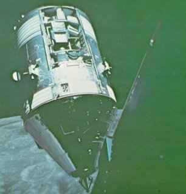

|

|
The eyes of geochemical sensors peer through an opening
in the sides of Apollo 15 CSM Endeavour. The instruments
gave us broad-scale remote sensing of the lunar surface,
allowing data from sampies collected on the surface to
be correlated across major areas of the Moon. Included
were precision cameras and spectrometers that sensed x-rays,
gamma rays, infrared radiation, and the chemical ions in the
ultrathin lunar atmosphere. Apollo 15 cameras supplied
much imagery used to plan our Apollo 17 exploration.
|